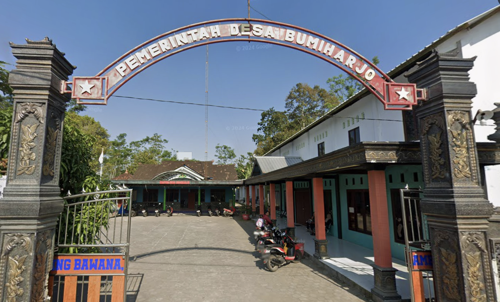

Struktur Organisasi

Struktur organisasi pemerintahan desa.
Mengenal sejarah, pemerintahan, serta gambaran umum Desa Bumiharjo, Kecamatan Kemalang, Kabupaten Klaten.

Desa Bumiharjo secara administratif termasuk dalam wilayah Kecamatan Kemalang Kabupaten Klaten. Penamaan/ nomenklatur Desa Bumiharjo (sebelumnya Bumiharjo) berdasarkan adat istiadat secara turun-temurun sejak Tahun 1900 an, Nama Desa Bumiharjo konon menurut cerita para sesepuh desa berasal dari praja Glonggong, cerita sesepuh untuk menunjukkan kehidupan warganya tentram makmur setelah Orde Baru Praja Glonggong diganti menjadi Bumiharjo yang artinya Bumi yang Sejahtera untuk mewujudkan kehidupan warganya yang tentram dan makmur.dan pada saat penjajahan Belanda nama tersebut tetap dilestarikan sampai dengan sekarang. Bersumber dari salah satu warga (sesepuh desa) bahwa konon ceritanya nama Bumiharjo adalah sebuah sebutan (akronim) dari Bumi artinya Tanah Sedangkan harjo artinya Sejahtera jadi Bumiharjo Memiliki arti : Tanah yang Sejahtera. Istilah ini muncul karena dulunya asal-usul penduduk Bumiharjo sebagian besar adalah Petani dan mengingat bahwa Bumiharjo memiliki Sumber Daya Alam Berupa Air yang berada didasar Tanah Bumiharjo, menurut Ceritanya ada beberapa Sumber Mata Air Kalau Tidak Ditutup Maka Bumiharjo Akan Tengelam.
Desa Bumiharjo merupakan salah satu Desa di Kecamatan Kemalang Kabupaten Klaten yang wilayahnya terdiri dari 10 Dukuh (Demen, Surowono Lor, Surowono Kidul, Pusung, Tamanharjo, Glonggong, Bumiharjo, Tirtomoyo, Ngrancah, Banjarsari) secara administrasi Desa Bumiharjo terdiri dari 6 rukun Warga dan 21 Rukun Tetangga. Luas Desa bumiharjo adalah 351 Ha, jumlah penduduknya 2165 jiwa, dengan mata pencaharian mayoritas adalah petani, peternak dan buruh. Adapun produk unggulannya adalah durian, nangka dan rambutan. Bumiharjo yang terletak di lereng Gunung Merapi juga menyimpan potensi pemandangan alam (view) yang menarik untuk dijadikan obyek wisata.
Mewujudkan masyarakat desa yang maju, mandiri, sejahtera, dan berbasis teknologi informasi.
Jumlah Penduduk
Jumlah KK
Luas Wilayah
Jumlah Dukuh
Struktur organisasi pemerintahan desa.